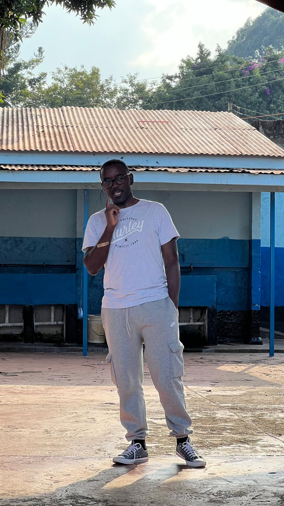

Our Story
“And we know that all things work together for good to them that love God, to them who are the called according to his purpose.”
Romans 8:28.
I have often relied on this scripture to find faith during difficult times, believing that even bad experiences can be transformed for good. However, it is equally important to recognize that the good things we experience are also part of God's "all things" and can lead to even greater blessings for His people.
The story of TrainUp Ministries, which you will discover shortly, is a testament to how God multiplies these good things for His purpose. In 2017, my manager, Kristine, transitioned me to a work-from-home program to eliminate my five-hour daily commute. This new arrangement provided the time I needed to drop my three children off at school with extra time to spare. I decided to use this time to lead our children through Bible devotionals using the YouVersion app, and my wife soon joined us. Word of our family devotion spread among their friends, and our group grew from three children to 50 within two years. To accommodate everyone, I moved our daily readings and discussions to an online platform with parental consent.
 When the COVID-19 pandemic began in 2019, we transitioned to weekly Friday Zoom calls so the children could stay connected and study together in a supervised environment. This community continued to thrive, maintaining an attendance of 25 to 50 participants throughout the lockdown.
Once restrictions were lifted, we explored hosting monthly in-person meetings. Our first gathering drew 50 children and parents, and our second—a "Worship Experience"—drew 100. It was then that my wife and I realized God was calling us to minister to young people.
Today, TrainUp Ministries has grown significantly. Our Friday Zoom Bible Study now features breakout rooms for kids, teens, and young adults, led by four dedicated volunteer teachers. Our physical meetings have expanded to include Coffee House Worship Nights, Christian Jazz dinners, game and beach dates, street worship, seminars, regional and international travel for missions.
Fun Fact: The name TrainUp Ministries is inspired by Proverbs 22:6: “Train up a child in the way he should go: and when he is old, he will not depart from it.”